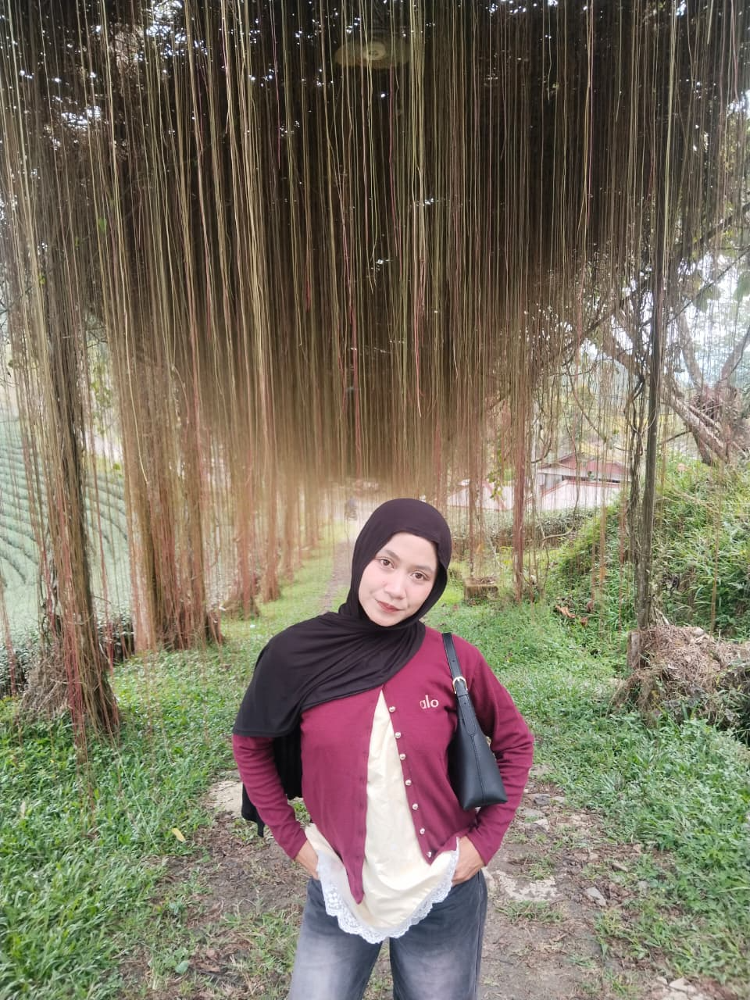

Mahasiswa Sistem Informasi
Suka membangun aplikasi web, mengelola database MySQL, dan mengeksplorasi teknologi web modern.
Saya adalah mahasiswa Sistem Informasi di Universitas Banten Jaya yang aktif di UKM Computer Community. Saat ini saya sedang fokus mempelajari dasar-dasar pengembangan aplikasi web dan pengelolaan basis data. Saya memiliki semangat belajar yang tinggi dan selalu tertarik untuk mencoba teknologi baru melalui proyek-proyek praktis.
Website E-Commerce Fashion berbasis Python Framework Django dan database MySQL.
Aplikasi pengelolaan laundry berbasis PHP Native (OOP) dan database MySQL untuk pencatatan transaksi dan pelacakan orderan.
iyarmdn157@gmail.com
Serang, Banten, Indonesia